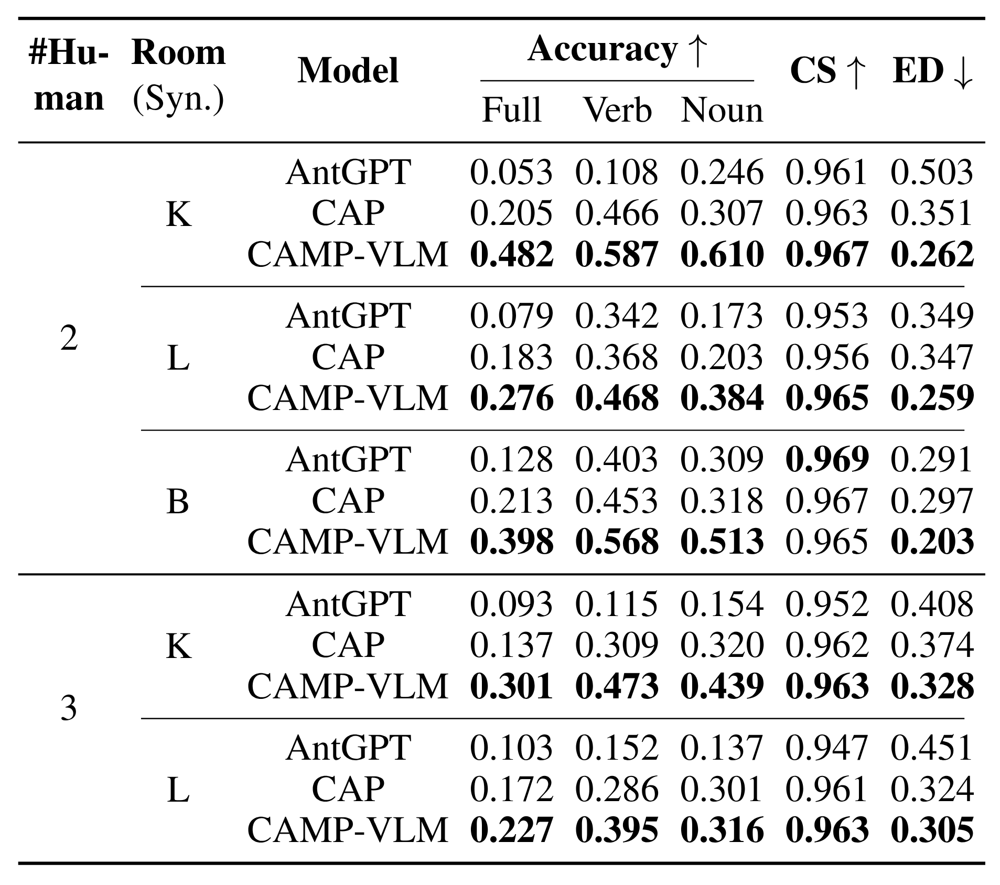
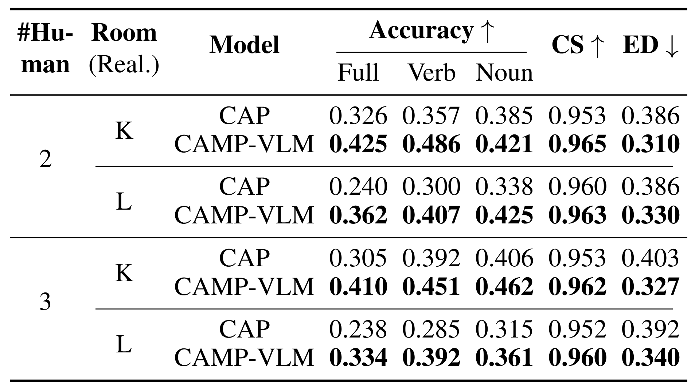
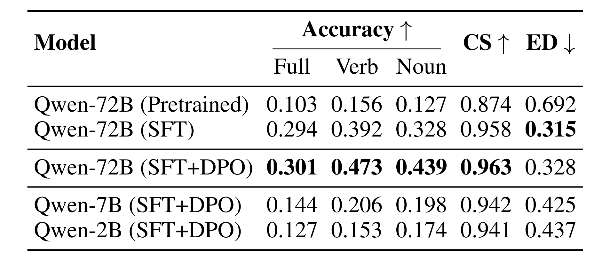
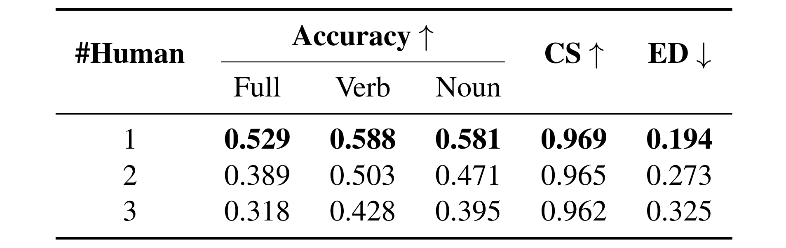
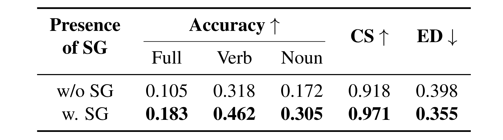

Results of all models in multi-human scenarios across all synthetic K(itchen),
B(bedroom), and L(iving room) scenes. Higher values of accuracy and Cosine
Similarity (CS) and lower values of Edit Distance (ED) indicate better performance. Bold numbers are the
best results in each sub-category.

Results of CAMP-VLM and CAP in real-world multi-human scenarios in
K(itchen) and L(iving room). Results of AntGPT are not listed due to low
performance.

Performance of CAMP-VLM with different fine-tuning strategies and VLM variants in kitchen (syn.) with 3
humans.

Performance of CAMP-VLM with increasing number of humans. The values are averaged across all room types.

Comparison of performance with and without scene graphs using pretrained GPT-4o in kitchen (syn.) with 3
humans.

Comparison of prediction performance of CAMP-VLM between synthetic and real-world scenes. The values are
averaged across all room types in 2 and 3 humans scenarios.